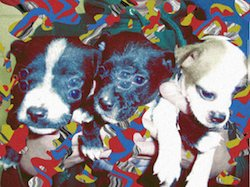

Like New #1
How do you even begin to write about new music? To initiate any article relating to modern music culture feels fatigued before the words have even formulated themselves from tentative fingertips. Cut down to the simplest terms: live shows are where money is made, from ticket fees and merchandise. The internet is the realm of ungovernable downloading, with listeners given to sudden levity and inconstancy.
Those who read these recommendations will have already heard of many of these acts. It is thus not intended to be a condescension; instead, more of a 'sharing' (to claim to have the authority over others is ridiculous, music is for sharing, the only advantage one can have is of time to trawl through it all, in my opinion). It would even be encouraging if others shared their own recommendations, so as to complete this idea.
. . .
Sore Eros
http://www.myspace.com/soreeros
For fans of Kurt Vile and Ariel Pink, Robert Robinson already has one album under his belt. If you are sick to the death of all the poor-quality bedroom recording projects around at the moment this might slip into your consciousness...in fluxes and refluxes. That which is lacking in so many disappointment acts, feeling - it's all here. It comes subtly, in the softened corners of the organ melody underpinned with gentle trumpet flourishes on Hey, Look at the sky!, for example, or the sparkling melodies and muted percussion on Tightest Touch. Quietened, reflective and ruminative, admittedly this album is not his most definitive statement - but so much to hope for. And by the way, if you haven't already checked out Kurt Vile...
. . .
Grass Widow
http://www.myspace.com/grasswidowmusic
Grass Widow are most definitely worth keeping an eye on. So far they have released two solid pieces of music that have already transcended the limits of what patronising journalists might expect from a girl band from San Francisco. Their new album is expected in August on Kill Rock Stars, which is surely an indication of a certain kind in itself. Girl bands tend to get disparaged so easily, but Grass Widow have already proved themselves to be uniquely talented, and have much more to give. At times, at their most vulnerable, they bring to mind The Chordettes. Lulling you into false security...then suddenly their uncompromising guitar lines, melodies and powerful troika harmonies flatten you, but leave you time to pull yourself up - the music falls away, such crucial awareness of space.
There's an uneasiness created by the resolve and tenacity of the playing. Crushingly, powerfully endearing chord changes, frenetic drumming, tenderly touching voices but with the determined and boisterous guitars and drums underneath. Likely to draw comparisons to a number of bands, but as always, music is best judged without too many specific preconceptions.
. . .
First Dog to Visit the Center of the Earth
http://www.myspace.com/fdvce
If you feel fulfilled by music that is difficult to imbue, with an enjoyment provoked more by the uncanny than the mellifluous, then perhaps you will enjoy First Dog to Visit the Center of the Earth. Although they are nothing alike, I cannot help but think of Autechre whilst listening; something utterly, inconceivably repugnant, yet fruitful. Sometimes I just want to put it off, never listen again, but I can't. Texturally there's a lot of landscape, in space and on land: this environment is made up of thousands of melodies, scales, colours, cacophonous tweets and whistles, syncopated beats, scrapes, bangs, cuts, blips and screams. I hate it. But I need to keep putting it on.
Make up your own mind - all his albums are available at http://www.mediafire.com/?sharekey=39f70ef38bd7a65cab1eab3e9fa335ca15622206af9040ca
. . .
21 March, 2010 - 21:57 — Neil Insh